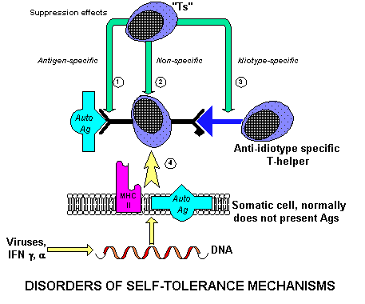
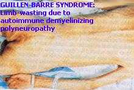

eMECHANISMS OF AUTOIMMUNE DISEASES: AUTOALLERGY AND DERANGEMENT OF SELF-TOLERANCE.
The autoallergy is interpreted usually as a failure of self-toleration mechanisms.
Brief summary of these mechanisms – deletion, anergy and suppression - is given below.

According to clonal deletion hypothesis, discussed above, autoimmune diseases are thought to result from the emergence of "forbidden clones" of lymphocytes reactive against self-antigens, probably owing to somatic mutations. The loss of autoreactive T- clones really occurs within thymus during T cell maturation process. The mechanism of such negative selection was mentioned above and related to apoptosis, induced by contact with autologous antigens. The death of autoreactive T-clones is triggered by activation of their fas-ligand after their surface receptors bind autoantigens. Principally, deletion is possible for B-clones also, but its importance is minimal for B-cells, because they do not enter thymus in their differentiation. Moreover, it has been proven that many, but not all autoreactive T-clones are eliminated in thymus.
Thus, although plausible and supported by some experimental evidence, the clonal deletion hypotheses cannot readily explain the well-documented presence of some T and many B lymphocytes that bear receptors for self-antigens, such as DNA, myelin, collagen, and thyroglobulin, in normal humans. To resolve this dilemma, it has been proposed that during development the immature B cells go through a phase during which contact with an antigen leads to functional paralysis without physical deletion. According to this concept, described as "clonal anergy", lymphoid cells that express receptors for self-antigens continue to exist in adult life but cannot be triggered to form antibody. It is believed to be especially essential for maintenance of B-cell self-tolerance. Recently the concept of clonal anergy was interpreted in context of MHC and co-stimulatory molecules expression on various self cells.
To be activated, antigen-specific autoreactive T-cell needs to get 2 signals:
1) peptide epitope of the autoantigen in context of MHC-molecules of APC cell
2) recognition of co-stimulatory molecules (for instance, B7-1 and B7-2) generated by APC.
Many autoantigens are initially presented by self somatic cells devoid of costimulators. Such “half-presentation” delivers a negative signal and autoreactive lymphocyte fails to be activated even by subsequent presentation of relevant epitope by competent APC, displaying costimulators.
Although some form of cional deletion or anergy may indeed contribute to maintenance of self-tolerance, several lines of evidence suggest that additional controlling mechanisms of peripheral suppression must also be involved. The presence of self-reactive lymphocytes in normal humans, and the ease with which autoimmune diseases can be produced in experimental animals, suggests that self-tolerance is maintained by mechanisms that actively suppress immune responses against self. Notice that this concept differs from clonal anergy in that the autoreactive cells are believed to be intrisically capable of responding unless restrained by some form of regulatory or suppressor mechanisms. Several such controlling mechanisms have been already mentioned (antigen-specific, idiotype-specific and non-specific suppression via function of some lymphocytes – like CD8+ cytotoxic ones; and antiidiotypic autoimmunity against autoreactive effectors realised by B-cells).
The manifestations of autoallergy, triggered by disorder of self tolerance, may involve all types of immunopathological reactions, described above. High titers of autoantibodies or presence of numerous autoreactive T-clones are associated with the sympthoms of autoimmune inflammation. Such hyperflogosis may be based on complement-dependent cytotoxic reaction, immune complex reaction, delayed type hypersensitivity reaction or may involve antibody dependent cell mediated cytotoxicity. The involvement of anaphylaxis is exclusively uncommon.
Lower levels of autoreactive effectors, for example, anti-receptor autoantibodies do not provoke inflammation, but may cause diseases due to derangement of cell regulation.
An example is Addison’s disease, which may be caused by autoimmune adrenalitis (with infiltration of adrenal cortex by lymphocytes and high titers of autoantibodies towards 17a - steroidhydroxylase, but may proceed as non-inflammatory atrophy of adrenal cortex with low titers of anti-receptor autoantibodies, blocking ACTH receptors on adrenocorticocytes (K. Krohn et al. 1992).
The break of tolerance may concern simultaneously all (or many) autoantigens: for instanse, hereditary defect of the protein, inducing apoptosis of immature T-cells during pre-natal clonal deletion, causes multisystem pathological autoallergic reactions with numerous cross-reacting autoantibodies of low affinity and different tissue specificity. This creates the picture of severe systemic lupus erythematosus.
Probably, similar mechanisms are responsible for other autoimmune disorders with non-organospecific autoantibodies (like systemic sclerosis or rheumatoid arthritis). As a rule, all autoantibodies of a given specificity in such non-organospecific pathology (e.g. all anti-DNA Ig) are directed towards one particular epitope of a corresponding antigen. If the affinity og autoreactive Ig is low and their target is limited with the particular epitope, one may propose that it was cross-reaction induced by some exoantigens, which triggered the mechanisms of autoimmunity.
If tolerance towards one of few concrete autoantigens is lost, this may create tissue specific autoimmune disorders (like myasthenia gravis or aplastic anemia).

As it was mentioned earlier, autoimmune tissue injury could be mediated by antibodies or by T-cell-mediated reactions. Both types II and III hypersensitivity mechanisms have been implicated. For example, opsonization and phagocytosis of red blood cells seems to be the principal mechanism of red cell distraction in autoimmune hemolitic anemia. On the other hand, fixation of anti-basement membrane antibody and complement to the glomerular basement membrane seems to be the trigger for glomerular injury in Goodpasture's syndrome. Antibodies directed against b -cells of the pancreatic islets may be responsible for type I (insulin-dependent diabetes mellitus.
Both of these are examples of type II hypersensitivity. Type III reactions, initiated by deposition of circulating immune complexes, are the major mechanisms of tissue injury in SLE. In addition to their cytotoxic effects, antibodies may also induce diseases by other mechanisms. In one group of autoimmune disorders, formation of antireceptor antibodies leads to a variety of disease manifestations. Included in this group are: (1) myasthenia gravis, in which anti-acetilcholine receptor antibodies impair myoneural transmission by accelerating the degradation or by blocking of muscle acetylcholine receptors; (2) Graves' disease, in which antibodies to the TSH receptor on thyroid cells mimic the action of TSH, leading to nyperthyroidism; and (3) certain forms of diabetes mellitus, in which antiinsulin receptor antibodies render the cells resistant to the action of insulin. In pernicious anemia, on the other hand, the autoantibodies are formed against a biologically active molecule, the intrinsic factor, which is blocked or netralized, leading to impaired absorption of vitamin B12.
The autoimmune disorders commonly combine different tissue damage mechanisms at the same time in one patient. For instance, in Hashimoto’s thyroiditis there exist both delayed type hypersensitivity against thyroid cells (with mononuclear infiltration and cell-mediated destruction of its tissue) and immediate type hypersensitivity (with production of anti-thyroperoxydase autoantibodies, displaying cytotoxic and proteolytic potential).
NEXT CHAPTER OR